skincare centre.
to better, boost and benefit your skin....
Product Reviews
Cleansers:
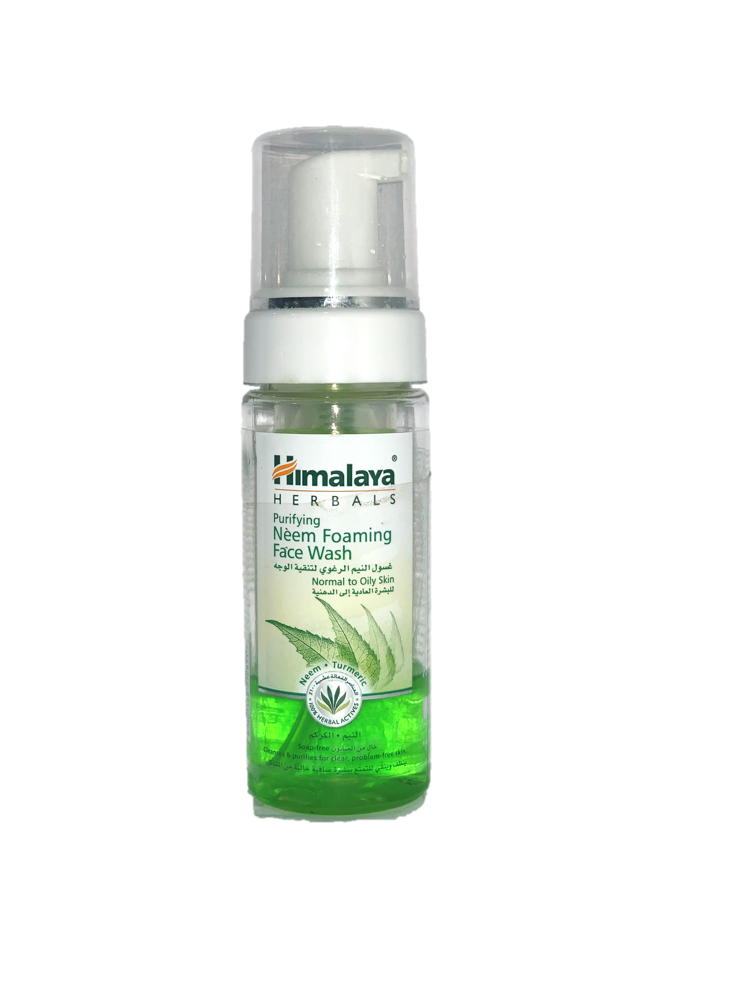
- Name: Himalaya Purifying Neem Foaming Face Wash
- Rating:
- Review: This face wash is effective in cleansing the skin and removing a day’s worth of impurities and dirt. It is also effective in removing makeup. This indicates that the face wash is can be too harsh or stripping on the skin if harsh cleansing techniques are used. The cleanser is a foam cleanser so it lathers up and cleanses with its foam
- Suitable:Very oily skin

- Name: Himalaya Moisturizing Aloe Vera Face Wash
- Rating:
- Review: A gentle moisturising face wash that removes dirt and impurities without stripping the skin. It effectively cleanses the skin and leaves it moisturised ever after washing; thus, it does not result to irritation.
- Suitable: Dry to Combination Skin
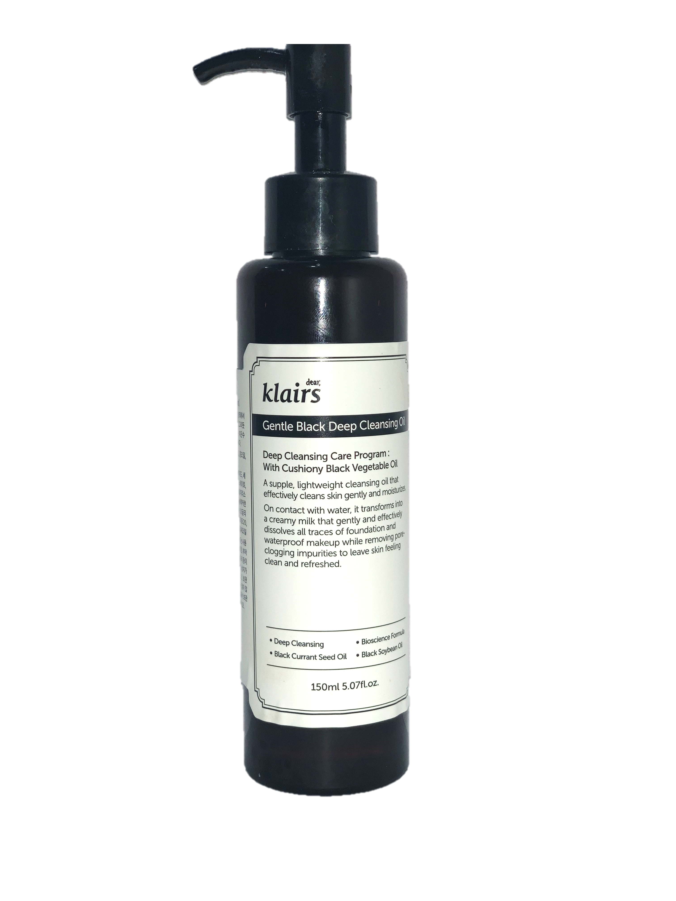
- Name: Klairs Gentle Black Deep Cleansing Oil
- Rating:
- Review: This face wash is effective in cleansing the skin and removing a day’s worth of impurities and dirt. It is also effective in removing makeup. This indicates that the face wash is can be too harsh or stripping on the skin if harsh cleansing techniques are used. The cleanser is a foam cleanser so it lathers up and cleanses with its foam
- Suitable:Very oily skin
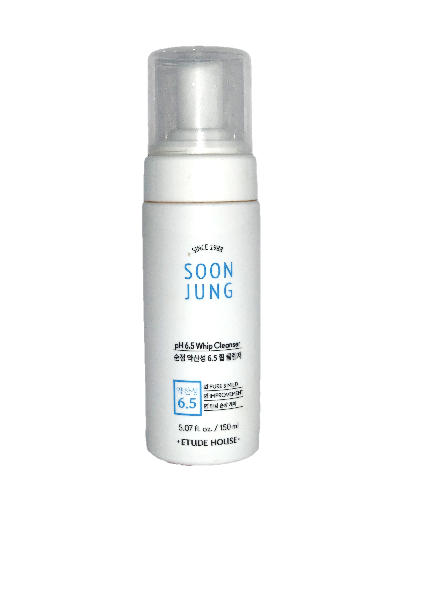
- Name: Etude House Soon Jung pH 6.5 Whip Cleanser
- Rating:
- Review: The cleanser is a good basic foaming cleanser that is effective at cleansing the skin without irritation and is gentle. Should not be used as the sole cleanser if makeup or sunscreen is on the skin - Double Cleansing
- Suitable: All skin types as well as sensitive.
Toners/Serums:
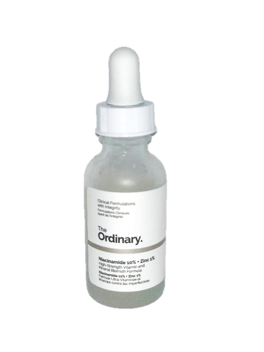
- Name: The Ordinary Niacinamide 10% + Zinc 1%
- Rating:
- Review: A no frills serum that provides exactly what it states: niacinamide and zinc. With continuous use, you will notice a reduction in inflammation and pore size. It also aids in regulating sebum production. It does not feel “luxurious” as it has basic ingredients, but it performs the needed function, which is the trend with most of The Ordinary products
- Suitable:All skin types
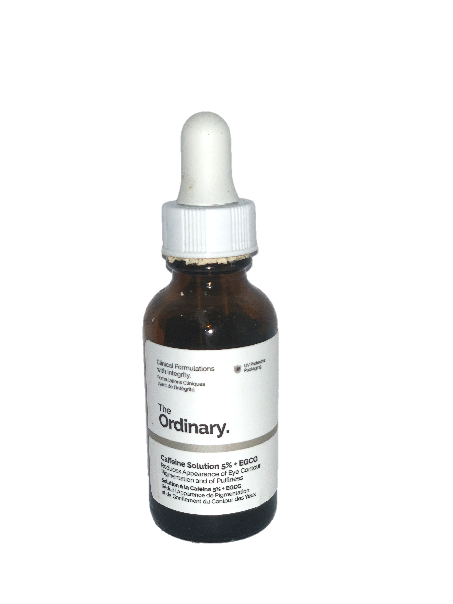
- Name: The Ordinary Caffeine Solution 5% + EGCG
- Rating:
- Review: Aids in reducing the puffiness and darkness under the eyes for temporary basis. Caffeine will not have long lasting effect upon continuous usage but will help your under-eye issues upon single usage as it has immediate but temporary effect. Thus, this is good to use under concealer as it allows for smoother application
- Suitable: All skin types

- Name: Pixi Glow Tonic
- Rating:
- Review: This is an AHA exfoliatingtoner that is based on glycolic acid. This gently but effectively helps in exfoliating the skin that helps in alleviating texture as well as blackheads and whiteheads over time. The toner works better by using it once every other day as daily usage can be irritating to the skin. This toner uses glycolic acid which can be sensitizing for those with sensitive skin.
- Suitable: All skin types excluding sensitive
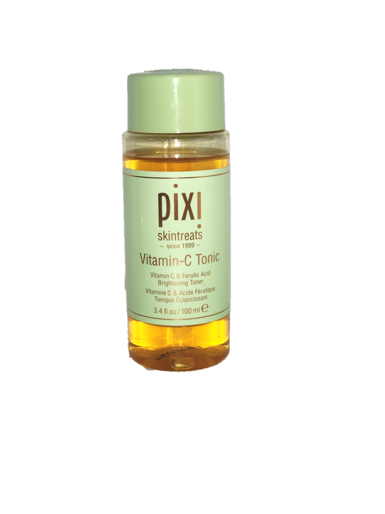
- Name: Pixi Vitamin-C Tonic
- Rating:
- Review: This vitamin c toner is not as effective as the glow tonic. The healing properties of vitamin c was barely visible on the skin after weeks of usage. It also has an abundant amount of pungent fragrance which adds to the susceptibly of the skin to be sensitized as vitamin c itself can be a strong ingredient. It made my skin extremely sensitive to the sun even with the usage of a sunscreen
- Suitable: None
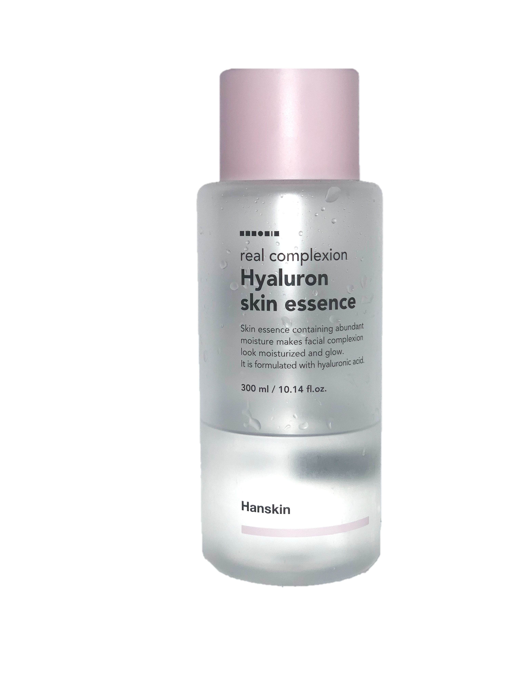
- Name: Han Skin Hyaluron Skin Essence
- Rating:
- Review: This essence hydrates the skin and is used after cleansing. It is an excellent hydrator to provide dehydrated skin types with the needed hydration as it has different forms of hyaluronic acid. It is a watery formula and has a quick absorption rate. Best used by tapping it into the skin
- Suitable: Dehydrated skin types
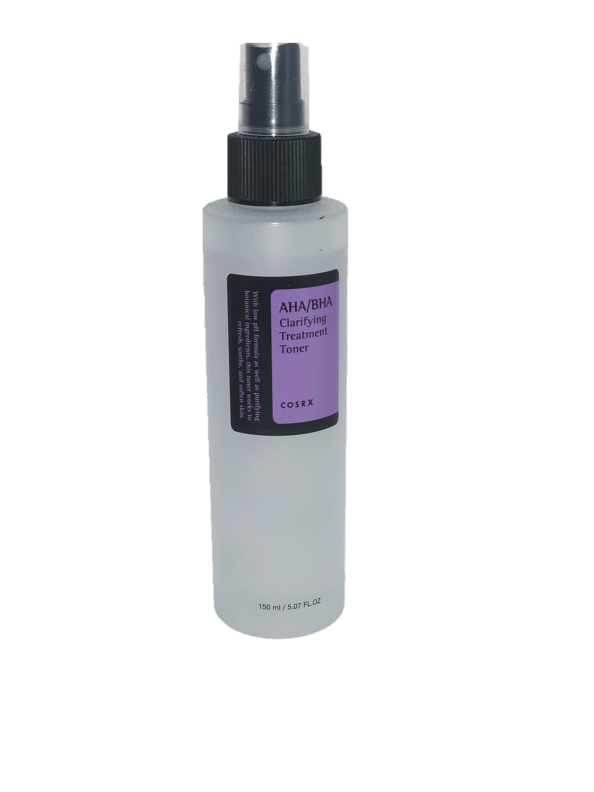
- Name: COSRX AHA/BHA Clarifying Treatment Toner
- Rating:
- Review: A gentle exfoliating toner that can be gradually built to be used every day. It has both AHA and BHA which can be used by someone with a regular skin to maintain skin health. Due to its general ingredients, it does not immensely aid in treating major skin issues such as acne, PIH, fungal acne... This can be used more as maintaining rather than treating.
- Suitable: All skin types
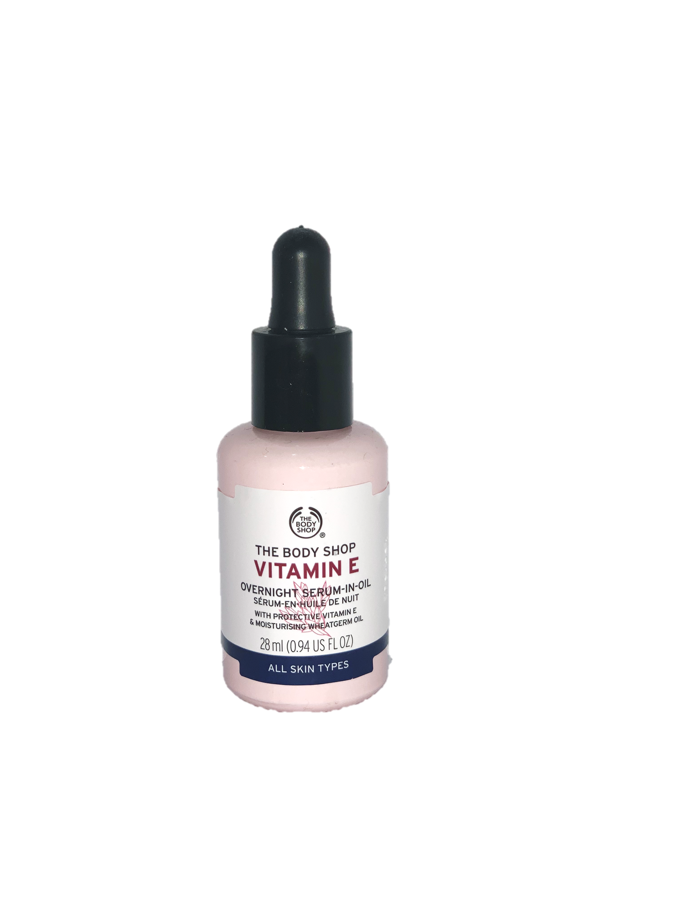
- Name:The Body Shop Vitamin E Overnight Serum-In-Oil
- Rating:
- Review: This oil worked wonderfully in protecting my skin from TEWL when I had drier skin. It sheltered my skin from extra dehydration and reduced the appearance of the hyperpigmentation in my skin. However, my skin started getting acneic and oiler and I could not reap the advantages of this oil as it highly comedogenic and further on clogged my pores which created more acne problems.
- Suitable: Very dry skin types
Moisturisers/Sunscreens:

- Name: La Roche Posay Anthelios XL Ultra-Light Fluid Facial Sunscreen SPF 50+
- Rating:
- Review: This is a chemical sunscreen that does exactly what it claims. It applies in a light way without leaving a greasy film or a white cast after and absorbs quickly. It acts as a good base if makeup is to be worn on top. However, there has been certain instances where the sunscreen will ball up and flake on the skin
- Suitable:Combination to oily skin types
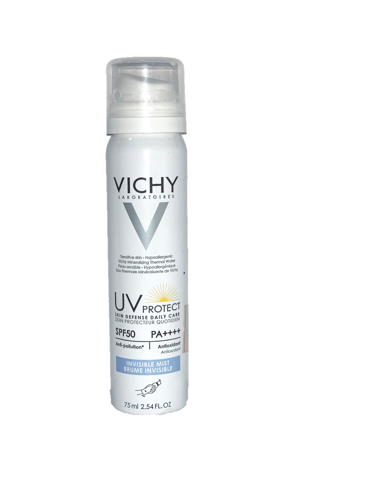
- Name:Vichy Skin Defense Daily Care - Invisible Mist
- Rating:
- Review: A good method of reapplication of sunscreen throughout the day. The spray disperses evenly on the skin and does not spray blotches of white marks. Can also act as a make-up re-fresher and does not ruin it
- Suitable: All skin types
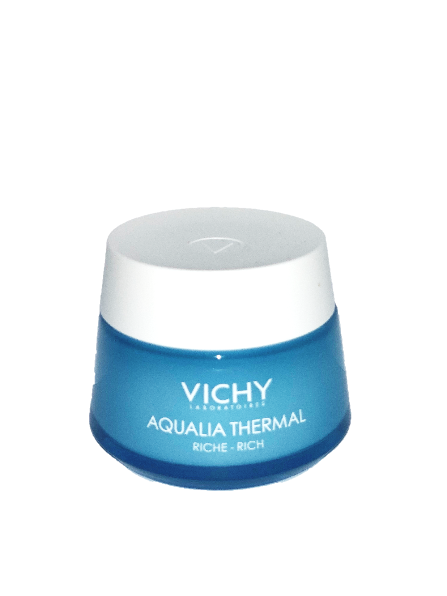
- Name:Vichy Aqualia Thermal Rich Cream Dynamic Hydration
- Rating:
- Review: A thick cream that deeply hydrates and moisturisesthe skin. It is a good basic night time moisturizer but is too heavy for use during the day. It helps restores the skin barrier due to the moisturizing factors in the cream. Due to its heavy properties, its more suitable for drier skin types
- Suitable: Dry skintypes

- Name: Neutrogena Rapid Clear Acne Defense Oil-Free Face Lotion & Moisturizer
- Rating:
- Review: Basic light moisturiser. Does not do anything other than moisturise which to whom are looking for that may like. Spreads nicely and absorbs almost immediately
- Suitable: Combination to oily skin types
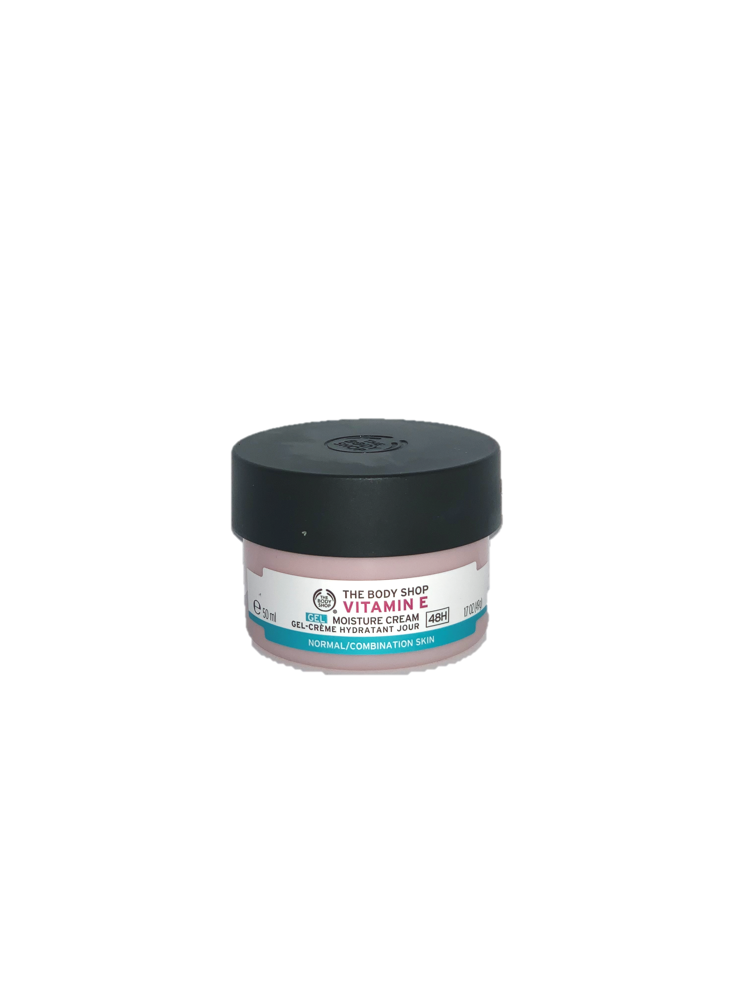
- Name:The Body Shop Vitamin E Gel Moisture Cream
- Rating:
- Review: The amount of alcohol and fragrance in this moisturiser overpowers any possible benefits that could emerge from it. This moisturizer feels like giving your skin a nice scent rather than treating it. The vitamin e, aloe vera and other beneficial ingredients do not have a presence next to the fragrance. Sensitizes the skin
- Suitable: None
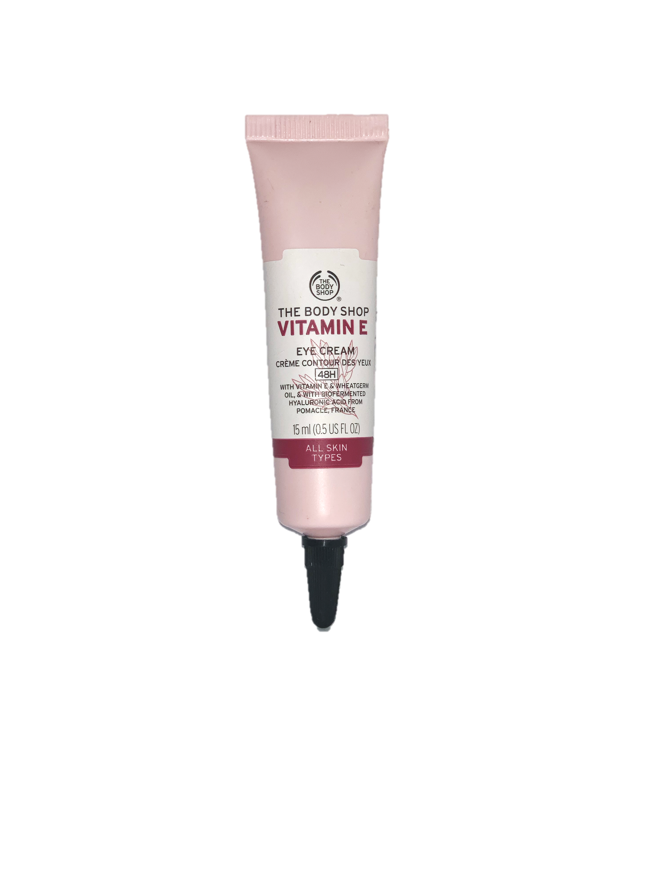
- Name:The Body Shop Vitamin E Eye Cream
- Rating:
- Review: This is a nice cream that is not too heavy or light for under the eyes. It moisturises it well and preps it for smooth makeup application. Aids in the long term dryness of the under-eye skin
- Suitable: All skin types
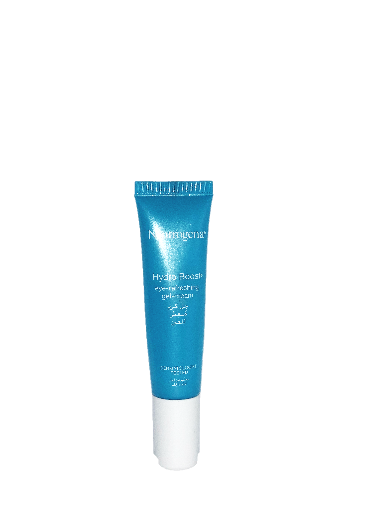
- Name:Neutrogena Hydro Boost Gel-Cream Eye
- Rating:
- Review: Light gel cream that can be used for people who are more susceptible to getting milia around their eyes as it not too heavy for under the eyes
- Suitable: All skin types
Masks:
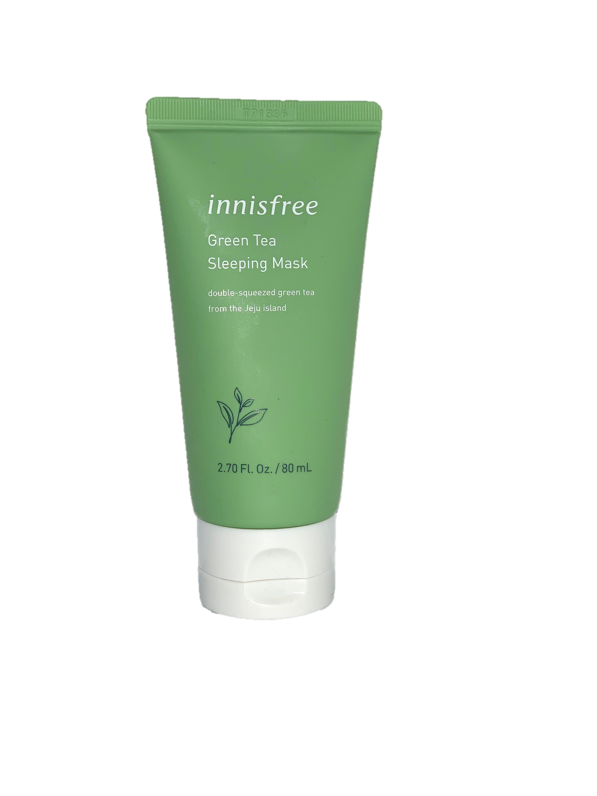
- Name: Innisfree Green Tea Sleeping Mask
- Rating:
- Review: A light overnight mask that provides with the necessary hydration and moisturizing properties without leaving an oily film. The green tea over continuous usage reduced redness and regulated the oil production. The only downside would be that it has a little bit of fragrance which can be off-putting
- Suitable: Combination to oily skin types

- Name: Sephora Collection Clay Masks
- Rating:
- Review: The extensive ingredient list in those masks was highly sensitizing to the skin and caused irritation and redness to the skin. Barely any benefit can be seen other than a minor moisturising property
- Suitable: None

- Name:Himalaya Refreshing Fruit Mask
- Rating:
- Review: This mask aids in removing the impurities and excess sebum present in the skin pores. It helps the skin look much more smoother as it reduced the appearance of texture. It can be bit drying when washed off so its important to moisturize after
- Suitable: All skin types
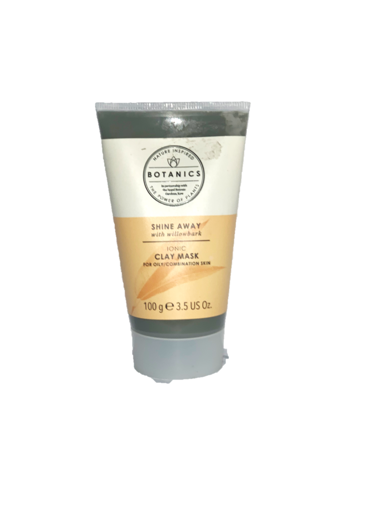
- Name: Botanics Shine Away Ionic Clay Mask
- Rating:
- Review: Extremely drying claymask that is better used for certain areas on the skin that is clogged and needs to be taken care. It removes all oils and some blackheads when used on the desired areas
- Suitable: Very oily skin types
More product reviews to come...